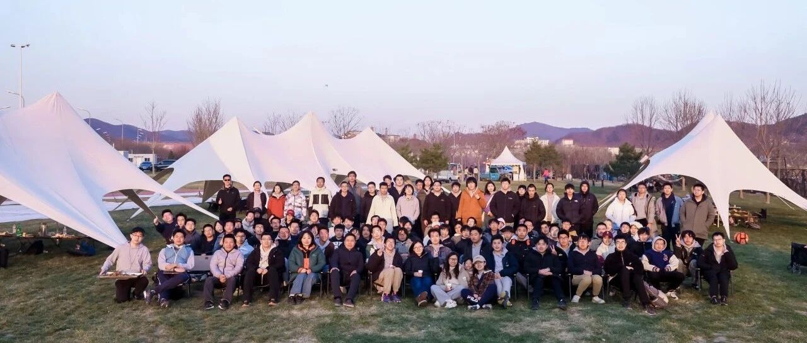

北京大学通用人工智能实验班：通识、通智、通用
全文共5659字，阅读约需18分钟


编 者 按
兼容并包，消解边界，学科交互尽显创新。探索交叉，融合互鉴，自我成长的道路无限丰富。在北大，无论学科与专业，每个人都可以实现自己的梦想！设置全面的A+学科拓宽视野，指向前沿；自由多元的培养模式碰撞思想，提高能力。跨院系选课、辅修双专业、跨学科项目、跨学科专业……在北京大学的特色项目和专业中，你将找到你的专属答案。

在人工智能浪潮席卷全球的今天，为培养“通识+通智+通用”的世界顶尖复合型人才，北京大学人工智能研究院依托元培学院，组建了北京大学通用人工智能实验班（以下简称“通班”），将顶尖人才引入通用人工智能领域，为有志于在人工智能相关领域发展的同学提供国际一流的学习平台与交流环境。
通班由北大人工智能研究院院长、讲席教授朱松纯领衔创立，源于朱松纯教授对人工智能人才培养的前瞻性思考。他提出，智能学科需像“下围棋”一样谋篇布局，而非“打篮球”般追逐热点。通班旨在锻造人工智能“科技王牌军”，形成人工智能“创新策源地”，为国家重大战略需求培养人工智能领域的复合型领军人才。
根据AIRankings的最新国际排名，北京大学最近5年在人工智能领域成果发表量已逐年增长，目前在中美顶尖高校 AI 成果发表量中排名第一。随着一大批优秀研究人员归国加入，相信北大将成为人工智能领域的引领者。

AIRankings 统计成果发表量曲线图

▽点击视频，了解北大通班▽
全新挑战
人生不设限
“来到元培应该多尝试尝试”“我对新选择和新事物抱有开放态度”——面对新挑战的勇气和信心，促使他们推开了通班的大门。
北大通班由人工智能研究院负责提供教学安排，面向元培学院招生。作为肩负北大本科教育改革探索重任的元培学院，是非常适合通班发展的土壤。正如元培学院院长李猛教授所说：“无论是学生自由选择课程、自由选择专业的元培教育模式，还是学院已经开展的多个跨学科人才培养项目和通识教育核心课程体系，都与通班的办学理念相契合。”


“人工智能是一个非常大的交叉学科，本身就有一个庞大的体系。” 朱松纯教授介绍说。通用人工智能的研究目标是寻求统一的理论框架来解释各种智能现象，并研发具有高效的学习和泛化能力、能够根据所处的复杂动态环境自主产生并完成任务的通用人工智能体，使其具备自主的感知、认知、决策、学习、执行和社会协作等能力，且符合人类情感、伦理与道德观念。为了培养从事通用人工智能事业的复合型领军人才，仅仅把人工智能视为应用领域，课程只集中在某个研究热点上，是完全无法满足需要的：
一个人只有把人工智能六个领域都搞懂了、融会贯通了，你才能说你是人工智能领域的人才或者专家。

当对人工智能的向往，遇上全新培养方案和广阔发展平台，“心动”的感觉就此产生。起初，大家的专业规划各不相同：数学、心理学、计算机……但对“通用人工智能”共同的向往却让他们汇聚于此，探索这个位于学科交叉点上的新兴领域。
全新课程
改革不停歇
创新性，也意味着课程体系的大幅度改革。朱松纯教授将通班培养目标归纳为交叉人文社科的“通识”，融会贯通人工智能六大领域的“通智”和融入各行各业的“通用”。
为了实现三大目标，老师们反复研究，悉心打磨，为这些未来的AI人才们量身定制专属培养方案。新课程体系专业性过硬，又充分体现北大学科优势。通用视觉、自然语言、认知推理、机器人、机器学习和多智能体等人工智能六大核心领域全覆盖，辅以AI+X交叉学科全面呈现技术应用情况，让学生有能力和机会探索各个应用赛道，引导行业变革。

几年的实践中，课程体系成为通班真正的亮点，让同学们津津乐道。
“当我听到关于通班的宣讲之后，我看到通班全新的培养方案眼前一亮：从某种意义上，通班这是第一个真正和世界研究前沿接轨的国内本科生课程体系。”
—— 首届通班 姜广源
AI+法学领域的《人工智能伦理与治理》，邀请法学院教授讲授，在技术与社科的十字路口，引导大家思索人工智能应用触及到的伦理和法律问题，给很多同学留下了深刻印象。“（这门课让我）有一种同时扮演社会决策者、治理者和技术提供者的感觉”，“理解了真实社会运作的完整链条应该如何串联，理解了自己手中的技术之于社会的意义和作用。”
—— 首届通班 林昊苇
”《人工智能初级研讨班》让我窥探到人工智能的前沿，而《人工智能引论》让我系统地学习到部分人工智能相关的知识。”
—— 2021级通班 钱炜楠
“AI初级研讨班里，让初入人工智能领域的我，有机会窥见科研前沿各种奇妙的工作，对前路不禁浮想联翩；也让我们得以与学识渊博的教授们面对面交流，收获颇丰。”
—— 2022级通班 赵廷昊
“《人工智能引论》作为AI入门课程，不仅让我们系统性地学习了搜索、机器学习、CV、NLP、机器人学等的入门知识，打好诸多理论基础，更是以多个lab的形式让我们动手实操，初次尝试用python实现自己的AI项目。”
—— 2023级通班 陈应涵

当发现大家对培养方案有共性问题时，北大人工智能研究院副院长李文新教授会和同学们共进午餐，获取意见和建议。边吃边说的轻松气氛，打破了大家的隔阂，所有人都可以畅所欲言，很多问题也因此得以解决。李老师会结合大家的反馈，与其他老师共同商讨更为合理的课程顺序，交流改进教学方式和难度。
有敢为天下先的勇气，也有不断改进完善的魄力。每位学生是课程的参与者，也是培养体系的建设者。
全新体验
创新无止境
知识学习和科研相辅相成，也是通班培养系统的重要特点。
北大人工智能研究院学术委员会委员王亦洲教授负责北大通班学生实践项目、科研课题的执行：
借助北京通用人工智能研究院的科研平台，我们设计了丰富的AI科研实践课题供同学们选择。同时我们也组织了优秀的科研导师团队和他们的研究生团队，一起指导同学们进行科研实践。

在科研实践中，通班学生深度参与70余个前沿课题，覆盖通用人工智能、大模型、机器人、医疗、社会科学等领域，部分课题包括：

迄今，通班学生已获各类奖项奖学金 80 余项；在 CVPR、ICML、NeurIPS 等人工智能领域顶级会议和期刊上发表论文 40 余篇，部分成果已应用于产业场景。

数据统计截止时间 2024 年 10 月


通班同学参加人工智能顶级会议介绍研究工作

北大通班暑期科研实践
姜广源跟随导师进行了认知推理相关的研究，思考如何使得机器具有与人相似的思考、学习、推理方式。在他学业和科研“双丰收”的背后，是通班给予同学们的广泛自由：“我选择了一条可能有些激进的科研道路。为了在激进中稳步前行，我摸索出了如何高效规划和使用时间的方法，来平衡学业和科研。”
同样感受到通班给予同学们选择自由的，还有陈旭峥。他表示 “通班不仅为我们提供了人工智能各大领域的核心课程，还给同学们的自主探索留下了极大的空间。” 陈旭峥相信，未来他依旧会在通用人工智能的专业上“不断探索，不断热爱”，在通班提供的广阔平台中，走出自己的道路。
硬件资源上，通班为我们提供了充足的计算资源、经费。非硬件资源上，在信科、人工智能研究院、智能学院、王选所以及北京通用人工智能研究院的支持下，通班暑期和学期内的科研实习项目十分丰富，具有充分的选择空间。

人工智能研究院参与、北京通用人工智能研究院主导研发的全球首个通用智能人小女孩“通通”

人工智能研究院与通研院合作研究的机器手成果被央视新闻报道
全新视野
交流无边界
真正的创新往往诞生于不同思想的交汇处。在通班，我们打破地域与学科的界限，构建起立体化的学术交流网络。每年举办数十场高端学术活动，在跨文化对话中拓展全球视野。
在知识疆域里，通班为学生搭建了广阔的学术交流平台。这里有定期举办的国际学术论坛和名家讲座，让思想在交流中碰撞出智慧的火花；也有由同学们自主创办的"Tong Talk"学术沙龙。我们与UCLA、麻省理工、斯坦福等世界顶尖学府保持着紧密的合作，让每一次跨文化的对话都成为成长的契机。在这里，学术不再有边界，视野不再受局限，每一位学子都能在开放包容的学术氛围中，遇见更广阔的视野。

通班同学与哈佛大学、布朗大学荣休教授，菲尔兹奖获得者大卫•曼福德教授面对面交流

通智大师班，邀请国内外知名学专家学者在暑期科研实训内开展学术讲座

与瑞士学术代表团座谈交流 AI 安全与治理方向话题

AI TechDay，同学们展示科研成果、分享学术观点、促进跨学科合作的学术交流平台

TongTalk，通班同学自主组织，与青年学者交流探讨
除了定期的学术论坛、名师讲坛，日常学习中的交流讨论和团建活动也是通班的大家感情不断升温的重要保障。林昊苇表示，自己从零基础的科研“小白”，到在ICLR、EMNLP、ECML等国际顶级会议上以共同一作或合作者身份发表多篇论文，“通班的科研实践以及来自通院许多老师的讲座交流使我拥有了广阔的科研视野。”每年暑期举办的“北大&清华通班科研实训营”中，两校学子共同参与科研前沿讲座、着手科研课题实习，在严肃的科研和轻松的娱乐中，大家结识了更多志同道合的伙伴。 李珩立说：“在通班的平台上，我得以见到许多许多科学探索的先驱和大师，开阔了我的视野并且给我带来了许多启发。”
全新集体
生活不枯燥
学在通班收获了什么？除了“知识”，很多同学还提到了一个关键词——“归属感”。
在通班，师生其乐融融，同学互爱互助，每一个人都能在集体中，收获温暖与感动。老师们的关心和鼓励，让同学们在参观人工智能领域高楼大厦的同时，不断调整、适应，日臻完善。
这些来自各个院系的学术“大牛”们，在生活中却没有半点架子。导师交流会，让同学和老师能面对面深入交流；班级团建，老师们也常常加入这些青年学子的队伍里。“每年春分前后我们都固定举办一次春季运动会，希望可以带着朱松纯教授一起锻炼。”第一届通班班长林昊苇笑言道。“春夏之交，我们都会组织一场别开生面的通班大会，不仅可以了解过去一年通班的发展情况和最新科研进展，更能和各位老师和不同年级的同学们无间交流，在朱老师的带领下快乐运动、团建。”2023级通班班长陈应涵说道。

北大通班课外活动

北京大学通班智班联合团建


全新未来
逐梦不停歇
四年多的时间里，通班和同学们一同成长，并将在未来迎接更为辉煌的时代。
林昊苇
充满未来感的领域学习能让我更充分地理解世界


唐楚玥
感谢在通班学习的经历，进入实验室后开始对科研有了更多的思考
严绍恒
通班为每一位同学提供了创造无限可能的机会


杨丰源
对我而言，选择“人工智能”也许不需要额外的理由
肖茜之
通班的时光让我受益匪浅


姜广源
首届通班毕业生
北京大学年度学生人物·2023
在ICML、NeurIPS、CogSci等国际顶级会议上发表一作论文，曾获CogSci 2024 Best Undergraduate Paper等奖项
即将赴麻省理工学院脑与认知科学系读博深造

20年底的时候，朱松纯老师讲通用人工智能，我们作为学生觉得他好像在说一个很玄妙的东西。但同时我们也能感受到这个理念是有一套完整的理论以及先前研究的支持，所以我最后就决定相信朱松纯老师，相信通用人工智能，加入通班。而现在我们都能看到，大家已经觉得通用人工智能是一个很现实的事情了，至少有人已经走出来了一条路。
一些我自己的感受是，“通识”主要是元培的通识教育培养模式。同时，通班也有像人工智能与伦理、法律、哲学、音乐、社会科学等交叉学科的课，请一些对应院系的大佬来讲，课上我能体会到他们作为非技术研究的老师，对于人工智能的理解也是十分透彻的，他们阐述了很多关于人工智能从其他角度的思考。之后我再以一个技术人员的身份去做一些通用人工智能算法或产品的时候，就会自然地考虑到这些事情，这可能也是通班“通用”教育的优势所在。
林昊苇
首届通班毕业生
元培青年学者
本科期间在ICLR、EMNLP 等国际顶级会议上发表多篇论文
现在北京大学人工智能研究院读博深造

对于我而言，人工智能像是从科幻照进现实的钥匙，既是亟待破解的实际课题，又与人类社会生活紧密交织。怀揣着对未来探索的渴望，对“通用人工智能”这个科研话题也很感兴趣，想深入一探究竟，便毅然选择人工智能这一象征未来的学科。人工智能在我眼中更像是一个现实世界中的问题。我希望可以通过不管是什么样的知识，最终实现应用的目标，它跟我们人类社会生活是非常紧密相连的。
既然人工智能模型能够应用到智能体中，我能否做出一些特别基础的人工智能模型，将模型应用到物理、化学、生物等科学研究中？未来我也将花更多时间在“用AI辅助科学研究”方面，希望能够做出一个通用平台，让AI帮科学家们处理文献、设计实验，甚至生成假设。
未来已来，
通班把未来的课程体系变成现实，
通班人也将用专业知识把未来技术带入生活。
人工智能，
一个在科幻中常常出现的概念，
正逐渐进入寻常百姓家。
思想自由，兼容并包，
培育德才兼备的人才，
是通班的现在，也是通班的未来。

一百年来
中国科学家们前赴后继
求实创新，科技兴国
如今，正值百年未有之大变局
同学少年，勇立潮头
传承先辈精神
他们将创造一个属于人工智能的新时代
引领下一个百年

转载自“北京大学招生办”公众号
来源 | “北京大学”公众号、北京大学融媒体中心、北京大学人工智能研究院
视频 | 北京大学人工智能研究院
图片 | 受访者提供
封面 | 徐浩伦
文字 | 黄丽洁、李筱畅、余佳依
编辑 | 吕可欣
排版 | 李芮迪
责编 | 戴璐瑶